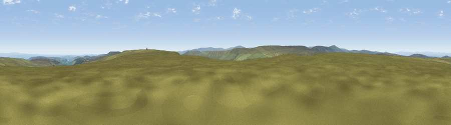

Viewpoint near Allenheads
#12361 in England · top 36% of its area beats it · near Allenheads · open accessWhere it is
The exact computed spot (NY 89675 45275). Click the marker for map links.
Public access: this spot lies on mapped open-access land (CRoW Act 2000) — you may roam here on foot. Computed from Natural England's CRoW access layer and OpenStreetMap rights of way — not the legal definitive map. Always verify locally.
The view, rendered

A 360° render of this exact spot computed from the terrain model, tree cover and land cover — summer colours, afternoon light, calibrated against photographs of famous viewpoints. Real trees, hedges and buildings will differ in detail.
The panorama
Grey silhouette: terrain skyline in each direction (720 bearings, Earth curvature and refraction included). Dashed green: skyline with trees (+15 m) and buildings (+8 m) as obstacles. Blue strip: how far the ground is visible on each bearing.
Where the view opens
Wedge length = distance to the farthest visible ground on that bearing (vegetation-aware). Rings at 10, 25 and 50 km.
What fills the view
95% grassland · 3% woodland · 1% cropland
Angular shares of the visible panorama (visual magnitude), not map area. Landscape diversity 0.10 (0–1 Shannon).
Key numbers
More beautiful places nearby
The staircase of upgrades: each row has a higher view potential than everything closer. Driving times are estimates from straight-line distance, calibrated against real road routing — check an actual route before setting out.
| Place | Direction | Drive | Score |
|---|---|---|---|
| Dry Rigg [Redburn Common] | ESE · 1 km | ~3 min | 61.9 |
| Dry Rigg | E · 2 km | ~5 min | 65.2 |
| Boltslaw West [Bolt's Law] | E · 5 km | ~11 min | 66.9 |
| Viewpoint near Rookhope | E · 5 km | ~12 min | 70.4 |
| Viewpoint near Allenheads | W · 8 km | ~16 min | 74.6 |
| Mickle Fell | SSW · 23 km | ~37 min | 75.8 |
| Great Dun Fell | SW · 23 km | ~38 min | 77.8 |
| Little Dun Fell | WSW · 23 km | ~38 min | 78.4 |
54.80224, -2.16214 · source: screening · position refined by local search. Computed location — check access rights before visiting.